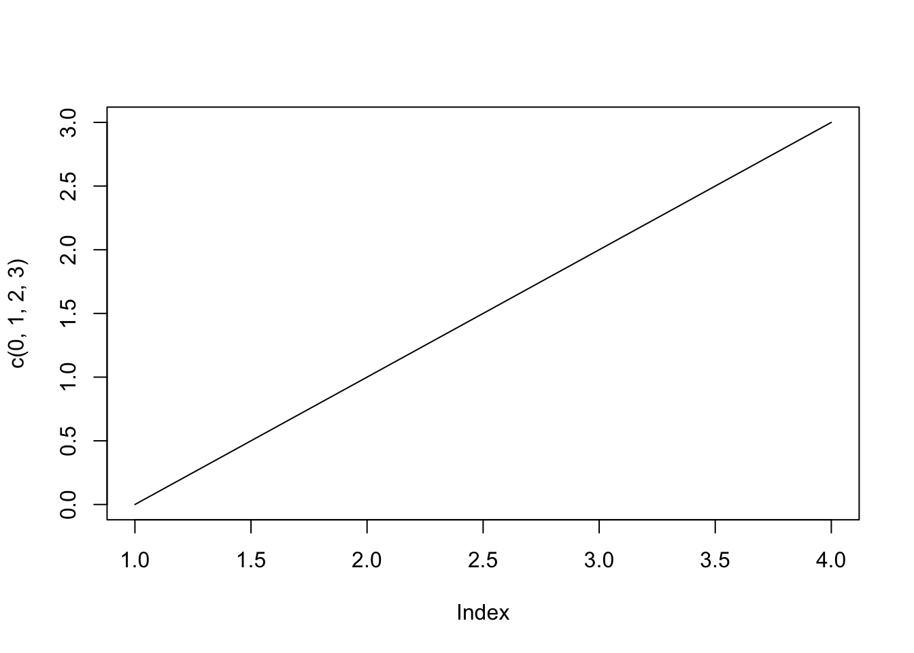

Es fácil crear texto con Markdown: itálicas, negrita, y negrita itálica, al escribir: *itálicas*, **negrita**, y ***negrita itálica***.
1.1 Cabecera de nivel 2
Se pueden escribir superíndices y subíndices para exponentes como 32 o H2O, al escribir: 3^2^ o H~2~O. Observa el uso de dos símbolos para envolver el elemento que se está moviendo hacia arriba o hacia abajo.
La cabecera de nivel 2 se formatea con un estilo especial tiene automáticamente una línea horizontal debajo (en html).
1.1.1 Cabecera de nivel 3
También se puede utilizar texto tachado incorrecto, al escribir ~~incorrecto~~.
1.1.1.1 Cabecera de nivel 4
Se pueden usar “acentos descendentes”, “acentos graves” o “Backticks” para indicar texto literal, al escribir: `texto literal`. Eso puede ser útil para escribir código ya que usa una fuente monoespacial (todas las letras ocupan el mismo espacio).
1.1.1.1.1 Cabecera de nivel 5
Enlazar a otras páginas web es fácil. Si se quiere mostrar un enlace, envolver el enlace entre < y > como en el siguiente ejemplo: http://destio.us.es/calvo, al escribir: <http://destio.us.es/calvo>.
También puede usarse corchetes y paréntesis para indicar un enlace en línea como el siguiente: Mi página personal, al escribir: [Mi página personal](http://destio.us.es/calvo).
1.1.1.1.1.1 Cabecera de nivel 6
Es fácil agregar código a su documento Quarto utilizando una pareja de tres “acentos graves” o “backticks”: ```. Puede definir el lenguaje dentro de las llaves y luego usar el estilo de ese lenguaje para su formateo. En el siguiente código R se suma el valor de dos variables e imprime el resultado.
Código
# <-- Este símbolo se usar para comenzar una línea de comentario al escribir R# las líneas comentadas no se ejecutarán como parte del código# se pueden dejar comentarios útiles para ti u otras personas que lo lean# crear una variable y asignarle su valorvariable_1 =3#crear una segunda variable y darle su valorvariable_2 =3#añadir las dos variables y grabar el resultado como una tercera variablevariable_3 = variable_1 + variable_2#print muestra el resultado guardado en la variableprint(variable_3)
[1] 6
Al escribir:
Código
# <-- Este símbolo se usar para comenzar una línea de comentario al escribir R# las líneas comentadas no se ejecutarán como parte del código# se pueden dejar comentarios útiles para ti u otras personas que lo lean# crear una variable y asignarle su valorvariable_1 =3#crear una segunda variable y darle su valorvariable_2 =3#añadir las dos variables y grabar el resultado como una tercera variablevariable_3 = variable_1 + variable_2#print muestra el resultado guardado en la variableprint(variable_3)
[1] 6
También se puede incluir información guardada en objetos R en la redacción de un párrafo. Por ejemplo, el valor de variable_3 es igual a 6.
Para mostrarlo el valor de un objeto R se tiene que escribir: un acento grave + “r”, seguido del objeto R (o cálculo en R), y finalizar con un acento grave. Para obtener el párrafo anterior se ha escrito en el fichero Quarto:
También se puede **incluir información guardada en objetos R en la redacción de un párrafo**. Por ejemplo, el valor de `variable_3` es igual a `r variable_3`.
Cabecera de nivel 3 sin numerar ni en la tabla de contenido
Texto …
Cabecera de nivel 3 sin numerar
Texto …
2 Más elementos markdown
A continuación se muestran algunos ejemplos de markdown básicos. El código markdown que se escribe para obtener estos resultados puede verse en el fichero fuente Quarto (qmd) que se ha utilizado para crear este documento.
2.1 Listado sin numerar
Estos listados se pueden escribir poniendo al inicio de cada elemento un símbolo: *, - o +.
Elemento A
Elemento B
Elemento C
Elemento D
Elemento E
2.2 Listado numerado
Estos listados se pueden escribir poniendo al inicio de cada elemento:: 1. (número+“.”), a., i. o A.
Elemento A
Elemento B
Elemento C
Elemento D
Elemento E
2.3 Listados mixtos
Elemento A
Elemento A.1
Elemento A.2
Elemento A.2.a
Elemento A.2.b
Elemento A.2.c
Elemento B
Elemento C
Para este tipo de listados anidados se usan “tabulaciones de 4 espacios”. Este listado se ha escrito con el siguiente código:
1. Elemento A
* Elemento A.1
* Elemento A.2
a. Elemento A.2.a
b. Elemento A.2.b
c. Elemento A.2.c
2. Elemento B
3. Elemento C
Para usarlo en salidas “html” se escribe: ‰ (‰)
Para usarlo en salidas “pdf” se puede usar:
El mismo código que en html (método recomendado): ‰ (‰)
El símbolo del tanto por mil en LaTeX es: \permil, se escribe en markdown: $\permil$ y produce: \(\permil\). Pero para que pueda verse correctamente, se necesita añadir en la cabecera yaml del documento:
header-includes:- \usepackage{wasysym}
Con esta opción no se vería en html, de ahí que se recomiende usar el primer método.
Salto de página en pdf
Para que se produzca un salto de página en un fichero de salida “pdf”, se escribe el siguiente código markdown:
{{< pagebreak >}}
3 Escribir Código
3.1 Ejemplo con R
Un ejemplo de gráfico linear usando el sistema base de R “graphics”.
Código
plot(c(0,1,2,3), type="l")

Se obtiene al escribir:
Código
plot(c(0,1,2,3), type="l")
3.2 Ejemplo con Python
Un ejemplo de gráfico linear usando Python y la librería matplotlib.
Código
import matplotlib.pyplot as pltplt.plot([0,1,2,3])plt.show()
En este caso, para que no se evalúe el código y de ahí que no se muestre el gráfico resultante (solamente se ve el código), se ha añadido la opción de chunk: eval: false. El código escrito ha sido el siguiente:
Código
import matplotlib.pyplot as pltplt.plot([0,1,2,3])plt.show()
3.3 Uso de opciones en el código (“chunks”)
Código
#crea un data.frame desde dos vectores e imprime el data.frameequipo =c("A", "B", "C")ganancia =c(45,63,47)df =data.frame(equipo, ganancia)print(df)
equipo ganancia
1 A 45
2 B 63
3 C 47
3.3.1 Opciones para código
Hay dos opciones importantes:
echo: incluye el código fuente en el documento de salida
warning: incluye “avisos” o “warnings” en el documento de salida
Examine el siguiente código escrito en el fichero Quarto:
Código
# crea dos variables con valores, almacena la suma en una tercera variable# e imprime la tercera variablev1 =5v2 =4v3 = v1 + v2print(v3)
[1] 9
La salida que se muestra en el fichero (“html”, “pdf”, …) es la siguiente:
Código
# crea dos variables con valores, almacena la suma en una tercera variable# e imprime la tercera variablev1 =5v2 =4v3 = v1 + v2print(v3)
[1] 9
En la mayoría de los informes, se quiere que únicamente se muestren los resultados y no se muestre el código utilizado en ninguna parte. También se podría mostrar puntualmente algún código porque se quiera resaltar.
#| echo: false
#| warning: false
[1] 9
La opción echo: false desactiva la impresión del código (solamente muestra los resultados).
3.4 Otras opciones para el código
También se puede utilizar en la cabecera del documento yaml estas opciones y otras de forma general
---1title:"Escribir código R en un documento Quarto"author:"Pedro Luis Luque"date:"`r Sys.Date()`" # "1-16-2024" # daría error: 16-1-2024date-format:"DD/MM/YYYY"2lang: es3toc:true4toc-depth:45number-sections:true6format:7html:8code-tools:true9code-fold:true10pdf: default11execute:12echo:true13warnings:false---
1
title:, se escribe el título del documento.
2
lang: es, se está indicando que el texto está escrito en español.
3
toc: true, con esta opción se construye una tabla de contenido o índice del documento.
4
toc-depth: 4, indica que en el índice se muestren hasta los títulos de nivel 4 (####).
5
number-sections: true, indica que se quiere enumerar las títulos o secciones del documento.
6
format:, se inicia el apartado de las salidas que se quieren generar.
7
html:, se genera la salida de ficheros “html”.
8
code-tools: true, activa la consulta del código markdown-quarto utilizado para generar el documento (para ficheros “html”).
9
code-fold: true, permite plegar u ocultar (“folding”) el código o mostrarlo desplegado.
10
pdf:, se genera la salida de ficheros “pdf”.
11
execute:, se inicia el apartado de cómo ejecutar el código incluido en el fichero Quarto.
12
echo: true, indica que por defecto el código que se escriba en un chunk se mostrará (con echo: false, no se mostraría el código).
13
warnings: false, indica que los mensajes de aviso o warnings que se produzcan no aparezcan en la salida.
Esta es una representación de las muchísimas opciones que se pueden establecer en la cabecera yaml de un documento Quarto.
Nota: más información sobre uso de fechas (“date:”) en la cabecera yaml: Documentación Quarto.
Ejecutar el código
---title: "Quarto Markdown Básico: Parte 1"author: "Pedro Luis Luque"date: "`r Sys.Date()`"#date: 1-16-2024" # daría error: 16-1-2024date-format: "DD/MM/YYYY"lang: estoc: truetoc-depth: 4number-sections: trueformat: html: code-tools: true code-fold: true pdf: header-includes: - \usepackage{wasysym} #pdf: defaultexecute: echo: true warnings: false---<!--- Esto es un comentario dentro de un documento Quarto ---># Cabecera de nivel 1Es fácil crear texto con Markdown: *itálicas*, **negrita**, y ***negrita itálica***, al escribir: `*itálicas*, **negrita**, y ***negrita itálica***`.## Cabecera de nivel 2Se pueden escribir superíndices y subíndices para exponentes como 3^2^ o H~2~O, al escribir: `3^2^ o H~2~O`. Observa el uso de dos símbolos para envolver el elemento que se está moviendo hacia arriba o hacia abajo. La cabecera de nivel 2 se formatea con un estilo especial tiene automáticamente una línea horizontal debajo (en html).### Cabecera de nivel 3También se puede utilizar texto tachado ~~incorrecto~~, al escribir `~~incorrecto~~`.#### Cabecera de nivel 4Se pueden usar "acentos descendentes", "acentos graves" o "Backticks" para indicar `texto literal`, al escribir: `` `texto literal` ``. Eso puede ser útil para escribir código ya que usa una fuente monoespacial (todas las letras ocupan el mismo espacio).##### Cabecera de nivel 5Enlazar a otras páginas web es fácil. Si se quiere mostrar un enlace, envolver el enlace entre `<` y `>` como en el siguiente ejemplo: <http://destio.us.es/calvo>, al escribir: `<http://destio.us.es/calvo>`.También puede usarse corchetes y paréntesis para indicar un enlace en línea como el siguiente: [Mi página personal](http://destio.us.es/calvo), al escribir: `[Mi página personal](http://destio.us.es/calvo)`.###### Cabecera de nivel 6Es fácil agregar **código** a su documento Quarto utilizando una pareja de tres "acentos graves" o "backticks": ```` ``` ````. Puede definir el lenguaje dentro de las llaves y luego usar el estilo de ese lenguaje para su formateo. En el siguiente código R se suma el valor de dos variables e imprime el resultado.```{r}# <-- Este símbolo se usar para comenzar una línea de comentario al escribir R# las líneas comentadas no se ejecutarán como parte del código# se pueden dejar comentarios útiles para ti u otras personas que lo lean# crear una variable y asignarle su valorvariable_1 =3#crear una segunda variable y darle su valorvariable_2 =3#añadir las dos variables y grabar el resultado como una tercera variablevariable_3 = variable_1 + variable_2#print muestra el resultado guardado en la variableprint(variable_3)```Al escribir: ```{r}# <-- Este símbolo se usar para comenzar una línea de comentario al escribir R# las líneas comentadas no se ejecutarán como parte del código# se pueden dejar comentarios útiles para ti u otras personas que lo lean# crear una variable y asignarle su valorvariable_1 =3#crear una segunda variable y darle su valorvariable_2 =3#añadir las dos variables y grabar el resultado como una tercera variablevariable_3 = variable_1 + variable_2#print muestra el resultado guardado en la variableprint(variable_3)```También se puede **incluir información guardada en objetos R en la redacción de un párrafo**. Por ejemplo, el valor de `variable_3` es igual a `r variable_3`. Para mostrarlo el valor de un objeto R se tiene que escribir: un acento grave + "r", seguido del objeto R (o cálculo en R), y finalizar con un acento grave. Para obtener el párrafo anterior se ha escrito en el fichero Quarto: ```{.markdown}También se puede **incluir información guardada en objetos R en la redacción de un párrafo**. Por ejemplo, el valor de `variable_3` es igual a `r knitr::inline_expr('variable_3')`. ```### Cabecera de nivel 3 sin numerar ni en la tabla de contenido {.unnumbered .unlisted}Texto ...### Cabecera de nivel 3 sin numerar {.unnumbered}Texto ...# Más elementos markdownA continuación se muestran algunos ejemplos de markdown básicos. El código markdown que se escribe para obtener estos resultados puede verse en el fichero fuente Quarto (qmd) que se ha utilizado para crear este documento.## Listado sin numerarEstos listados se pueden escribir poniendo al inicio de cada elemento un símbolo: `*`, `-` o `+`.* Elemento A* Elemento B* Elemento C* Elemento D* Elemento E## Listado numeradoEstos listados se pueden escribir poniendo al inicio de cada elemento:: `1.` (número+"`.`"), `a.`, `i.` o `A`.1. Elemento A2. Elemento B3. Elemento C4. Elemento D5. Elemento E## Listados mixtos1. Elemento A * Elemento A.1 * Elemento A.2 a. Elemento A.2.a b. Elemento A.2.b c. Elemento A.2.c2. Elemento B3. Elemento CPara este tipo de listados anidados se usan "tabulaciones de 4 espacios". Este listado se ha escrito con el siguiente código:```1. Elemento A * Elemento A.1 * Elemento A.2 a. Elemento A.2.a b. Elemento A.2.b c. Elemento A.2.c2. Elemento B3. Elemento C```## Términos clave y matemáticas en líneaPrimer término: definición del primer término.Segundo término: definición del segundo término.Tercer término: definición del tercer término.Fórmula : $i^2 = j^2 = k^2 = ijk = −1$, que se escribe: `$i^2 = j^2 = k^2 = ijk = −1$`.<!-- https://qmd4sci.njtierney.com/math.html --><!-- https://quarto.org/docs/authoring/cross-references.html#equations -->Se puede usar matemáticas resaltadas (centradas) al escribir una pareja de dos símbolos del dólar: `$$`.$$i^2 = j^2 = k^2 = ijk = −1$$$$x = \frac{-b \pm \sqrt{b^2 - 4ac}}{2a}$$$$\sum_{i = 1}^{n}{(\bar{x} - x_i)^2}$$Las anteriores ecuaciones, se han obtenido al escribir el código LaTeX siguiente:```$$i^2 = j^2 = k^2 = ijk = −1$$$$x = \frac{-b \pm \sqrt{b^2 - 4ac}}{2a}$$$$\sum_{i = 1}^{n}{(\bar{x} - x_i)^2}$$```La @eq-bayes muestra el Teorema de Bayes y la @eq-regresion muestra una fórmula usada en regresión lineal (se ha incluido referencias a fórmulas):$$Pr(\theta | y) = \frac{Pr(y | \theta) Pr(\theta)}{Pr(y)}$$ {#eq-bayes}$$Y \sim \beta_0 + \beta_1 X + \epsilon$$ {#eq-regresion}Se han obtenido al escribir:```$$Pr(\theta | y) = \frac{Pr(y | \theta) Pr(\theta)}{Pr(y)}$$ {#eq-bayes}$$Y \sim \beta_0 + \beta_1 X + \epsilon$$ {#eq-regresion}```## Uso del tanto por mil en Demografía- Para usarlo en salidas "html" se escribe: `‰` (‰)- Para usarlo en salidas "pdf" se puede usar: + El mismo código que en html (método recomendado): `‰` (‰) + El símbolo del tanto por mil en LaTeX es: `\permil`, se escribe en markdown: `$\permil$` y produce: $\permil$. Pero para que pueda verse correctamente, se necesita añadir en la cabecera yaml del documento: ```yamlheader-includes:-\usepackage{wasysym}``` Con esta opción no se vería en html, de ahí que se recomiende usar el primer método.:::{.callout-note}## Salto de página en pdfPara que se produzca un salto de página en un fichero de salida "pdf", se escribe el siguiente código markdown: ``` {.markdown shortcodes="false"}{{< pagebreak >}}```:::{{< pagebreak >}}# Escribir Código## Ejemplo con RUn ejemplo de gráfico linear usando el sistema base de R "graphics".```{r}#| echo: trueplot(c(0,1,2,3), type="l")```Se obtiene al escribir:```{r}#| echo: trueplot(c(0,1,2,3), type="l")```## Ejemplo con PythonUn ejemplo de gráfico linear usando Python y la librería `matplotlib`. ```{python}#| echo: true#| eval: falseimport matplotlib.pyplot as pltplt.plot([0,1,2,3])plt.show()```En este caso, para que no se evalúe el código y de ahí que no se muestre el gráfico resultante (solamente se ve el código), se ha añadido la opción de chunk: `eval: false`. El código escrito ha sido el siguiente:```{python}#| echo: true#| eval: falseimport matplotlib.pyplot as pltplt.plot([0,1,2,3])plt.show()```## Uso de opciones en el código ("chunks")```{r}#crea un data.frame desde dos vectores e imprime el data.frameequipo =c("A", "B", "C")ganancia =c(45,63,47)df =data.frame(equipo, ganancia)print(df)```### Opciones para códigoHay dos opciones importantes:* `echo`: incluye el código fuente en el documento de salida* `warning`: incluye "avisos" o "warnings" en el documento de salidaExamine el siguiente código escrito en el fichero Quarto:```{r}#| echo: true# crea dos variables con valores, almacena la suma en una tercera variable# e imprime la tercera variablev1 =5v2 =4v3 = v1 + v2print(v3)```La salida que se muestra en el fichero ("html", "pdf", ...) es la siguiente:```{r}#| echo: true# crea dos variables con valores, almacena la suma en una tercera variable# e imprime la tercera variablev1 =5v2 =4v3 = v1 + v2print(v3)```En la mayoría de los informes, se quiere que únicamente se muestren los resultados y no se muestre el código utilizado en ninguna parte. También se podría mostrar puntualmente algún código porque se quiera resaltar. * `#| echo: false`* `#| warning: false````{r}#| echo: false#| warning: false# crea dos variables con valores, almacena la suma en una tercera variable# e imprime la tercera variablev1 =5v2 =4v3 = v1 + v2print(v3)```La opción `echo: false` desactiva la impresión del código (solamente muestra los resultados).## Otras opciones para el códigoTambién se puede utilizar en la cabecera del documento yaml estas opciones y otras de forma general```yaml---title:"Escribir código R en un documento Quarto" # <1>author:"Pedro Luis Luque"date:"`r knitr::inline_expr('Sys.Date()')`" # "1-16-2024" # daría error: 16-1-2024date-format:"DD/MM/YYYY"lang: es # <2>toc:true # <3>toc-depth:4 # <4>number-sections:true # <5>format: # <6>html: # <7>code-tools:true # <8>code-fold:true # <9>pdf: default # <10>execute: # <11>echo:true # <12>warnings:false # <13>---```1. `title:`, se escribe el título del documento.2. `lang: es`, se está indicando que el texto está escrito en español.3. `toc: true`, con esta opción se construye una tabla de contenido o índice del documento.4. `toc-depth: 4`, indica que en el índice se muestren hasta los títulos de nivel 4 (`#### `).5. `number-sections: true`, indica que se quiere enumerar las títulos o secciones del documento.6. `format:`, se inicia el apartado de las salidas que se quieren generar.7. `html:`, se genera la salida de ficheros "html".8. `code-tools: true`, activa la consulta del código markdown-quarto utilizado para generar el documento (para ficheros "html").9. `code-fold: true`, permite plegar u ocultar ("folding") el código o mostrarlo desplegado.10. `pdf:`, se genera la salida de ficheros "pdf".11. `execute:`, se inicia el apartado de cómo ejecutar el código incluido en el fichero Quarto.12. `echo: true`, indica que por defecto el código que se escriba en un chunk se mostrará (con `echo: false`, no se mostraría el código).13. `warnings: false`, indica que los mensajes de aviso o warnings que se produzcan no aparezcan en la salida.Esta es una representación de las muchísimas opciones que se pueden establecer en la **cabecera yaml de un documento Quarto**.**Nota:** más información sobre uso de fechas ("`date:`") en la cabecera yaml: [Documentación Quarto](https://quarto.org/docs/reference/dates.html).